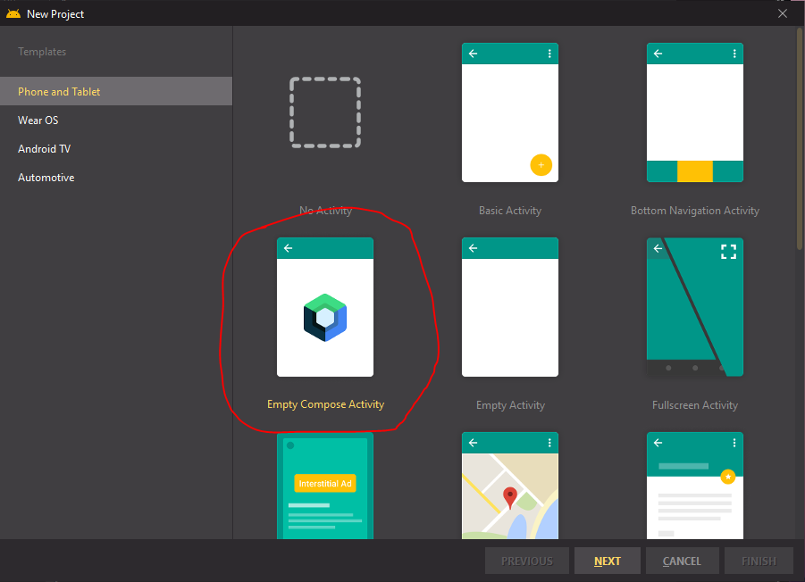

This codelab is design to introduce Jetpack Compose features by building a shopping list Android application. You will learn the following Jetpack Compose features and Jetpack Compose and Material Design UI components
In this codelab, you will learn to build an entire Android app using Android's Jetpack Compose libraries. Jetpack is a set of tools and library to help developers to follow best practices for building Android apps. We will build a shopping list app consists of list categories and an list items.
A computer running Windows or Linux, or a Mac running macOS. Android Bumble Bee Canary 12.
Build the shopping list app using Jetpack Compose entirely.
Open Android Studio, click the NEW PROJECT button to create a new project. Select the Empty Compose Activity project template, and press the NEXT button. The NEW project wizard default to the kotlin language for Jetpack Compose.

Compile and run the project after it has been created by Android Studio. You will see the "Hello Android" greeting text in the app.
The Shopping List app requires the following dependencies:
Add the following to build.gradle dependencies section:
// Navigation
implementation "androidx.navigation:navigation-compose:2.4.0-alpha08"
// Live Data
implementation "androidx.compose.runtime:runtime-livedata:$compose_version"
// Kotlin Extensions and Coroutines support for
implementation "androidx.room:room-runtime:2.3.0"
implementation "androidx.room:room-ktx:2.3.0"
kapt "androidx.room:room-compiler:2.3.0"
Also add the following after the packagingOptions block in the android section:
apply plugin: ‘kotlin-kapt'
Change the SDK, minimum SDK version to 31 in the build.gradle file. In addition, change the Compose version to 1.0.2 int the build.gradle project file.
buildscript {
ext {
compose_version = '1.0.2'
}
}
Sync the gradle and rebuilt the project and make sure that it still run.
Add the icon below to the drawable:
Open the MainActivity.kt and delete this block of code.
// A surface container using the 'background' color from the theme
Surface(
modifier = Modifier.fillMaxSize(),
color = MaterialTheme.colors.background
) {
Greeting("Android")
}
Add the AppScafold Composable function using the @Composable annotation.
@Composable
fun AppShoppingList() {
}
In the MainActivity class's onCreate method, the setContent method is basically setting the user interface for the application. The content is using the application theme. When you remove the code above, compile and run the app, there will be an empty screen. In the AppScaffold composable, we will add the Material Design's Scaffod UI component. The Scaffod component implements the basic material design layout structure. This layout can accommondate topbar, bottom bar, fab floating action button and navigation drawer. We will not use the bottom bar for the shopping list application. Let's begins to type keyword Scaffold within the AppScaffold function block.
The following Scaffold properties are need to be set:
Each UI component within Scaffold component has their own properties to be set additionally. We will proceed to fill these UI component one by one in the following steps.
For the top AppBar, we will setup the title, the navigation and its icon, the background color and the action buttons. Within the Scaffold code block, for the topbar property, set the following topbar block. We also need to set a variable to remember the drawer state. Above the Scaffold block, add the scaffoldState variable. The rememberScaffoldState is a composable function which allows to maintain the drawer state. In addition, add the scope variable for use with calling the asynchronous suspend function in a co-routine. These remember function instantiate the class objects.
val scaffoldState = rememberScaffoldState(rememberDrawerState(DrawerValue.Closed))
val scope = rememberCoroutineScope()
Scaffold(
...
Add the TopAppBar UI component to the Scaffold component.
TopAppBar(
title = { Text(text = "Shopping List") },
navigationIcon = {
IconButton(onClick = {
scope.launch {
scaffoldState.drawerState.open()
}
}) {
Icon(Icons.Filled.Menu, contentDescription = "hamburger menu")
}
},
backgroundColor = MaterialTheme.colors.primary,
actions = {
IconButton(onClick = {
// TODO - handle the click event later
}) {
Icon(Icons.Filled.Delete, null)
}
}
)
In the onCreate method, add the a call to the AppShoppingList composable within the App Theme block. The App Theme block's name is defined as the name of your project + AppTheme.
setContent {
MyComposeAppTheme {
AppShoppingList()
}
}
Build the project and run it. You should see the topbar with the title Shopping List. At this point, clicking on the hamburger and delete button do not do anything.
The Fab floating button will be used to navigate to the Add List Item screen. Add the following code below the TopAppBar block. The position property specified where the floating button should be placed on the screen. The action button proerpty define the icon for the button and setup the onClick event to navigate to the Add List Item screen. The Icon UI component within the FloatingActingButton define the Add icon for the button.
floatingActionButtonPosition = FabPosition.End,
floatingActionButton = {
FloatingActionButton(
onClick = {
// TODO - add call to the navigation controller to navigation to Add Item route
}
){
Icon(Icons.Filled.Add, "")
}
},
Next, create the AddListScreen composable by adding a new kotlin class. Name the file AddListScreen. Replace the file content with the following code:
@Composable
fun AddListScreen(modifier: Modifier = Modifier) {
Column(
modifier = Modifier.fillMaxSize(),
verticalArrangement = Arrangement.Center,
horizontalAlignment = Alignment.CenterHorizontally
) {
Text(text = "Add List Screen")
}
}
Build the project and run the app, you will see the Fab floating button at the bottom of the screen.
The navigation drawer consists of a header and a category menu. The drawer currently support only the category below:
The following code defines a composable with the header and category menu. The menu click event is hoisted to the caller by adding the onDestinationClicked lambda parameter. The Column UI component is used as the main container for the drawer with the specified padding. Inside the Column, the header is defined with the Row UI component with the Image and Text UI component. The Row component is used to arrange the Image and Text components horizontally. A divider is used to seperate the header from the menu.
The menus are generated using the route definitions which will be defined next. The routes are iterated through using forEach, and a Space and Text UI component is used to define the menus. Create a new kotlin class and name it Drawer. Replace the following into the file.
@Composable
fun Drawer(
modifier: Modifier = Modifier,
onDestinatonClicked: (route: String) -> Unit
) {
Column(
modifier
.fillMaxSize()
.padding(start = 24.dp, top = 48.dp)
) {
Row(
verticalAlignment = Alignment.CenterVertically
) {
Image(
painter = painterResource(R.drawable.ic__check_document_done_list_paper),
contentDescription = "App icon")
Text(stringResource(id = R.string.shoppinglist), fontSize = 28.sp)
}
Divider(color = Color.LightGray, thickness = 2.dp)
screensFromDrawer.forEach { screen ->
Spacer(modifier = Modifier.height(24.dp))
Text(
text = screen.title,
style = MaterialTheme.typography.h6,
modifier = Modifier.clickable {
onDestinatonClicked(screen.route)
}
)
}
}
}
Add the R.string.shoppingList to the string result. The value is Shopping List. Ensure to add the neccessary imports for the type used in the file. You can mouse over the type, and select the import command and select the namespace with compose.ui. The screensFromDrawer variable is not define yet. It will be done in the next.
The Shopping List app has two main screens. The Home Screen display the list content and the Add Item screen allow ther user to add an item. The Drawer Screen display the drawer header and the two list category menus.
We define a sealed class with the following parameters.
The route and title parameter is used to define the navigation graph, and the category is used for display content for the two different type of lists. Create a new kotlin class and named it Screen. Paste the following code into the file. The variables define the routes. There are two navigation routes in the app.
sealed class Screens(val route: String, val title: String, val category: Category) {
enum class Category { GROCERY, HOMEIMPROVEMENT, ADDLIST }
sealed class HomeScreen(
route: String,
title: String,
category : Category
) : Screens(route, title, category) {
object AddList : HomeScreen("addlist", "Add List", Category.ADDLIST)
}
sealed class DrawerScreens(
route: String,
title: String,
category: Category
) : Screens(route, title, category) {
object Grocery : DrawerScreens("grocery", "Grocery", Category.GROCERY)
object HomeImprovement : DrawerScreens("homeimprovement", "Home Improvement", Category.HOMEIMPROVEMENT)
}
}
val screensFromFab = listOf(
Screens.HomeScreen.AddList
)
val screensFromDrawer = listOf(
Screens.DrawerScreens.Grocery,
Screens.DrawerScreens.HomeImprovement,
)
Next, define two composables in two sepeate kotlin files. Create a kotlin class, and name it GroceryScreen. Replace the content with the following.
@Composable
fun GroceryScreen(modifier: Modifier = Modifier) {
Column(
modifier = Modifier.fillMaxSize(),
verticalArrangement = Arrangement.Center,
horizontalAlignment = Alignment.CenterHorizontally
) {
Text(text = "Grocery Screen")
}
}
Next, create another kotlin class and name it HomeImprovementScreen. Replace the content with the following.
@Composable
fun HomeImprovementScreen(modifier: Modifier = Modifier) {
Column(
modifier = Modifier.fillMaxSize(),
verticalArrangement = Arrangement.Center,
horizontalAlignment = Alignment.CenterHorizontally
) {
Text(text = "Home Improvement Screen")
}
}
Open the MainActivity.kt, in the drawer property, place the following code within its block. The Drawer composable closes the drawer popout and navigate to the select route of the menu.
Drawer { route ->
scope.launch {
scaffoldState.drawerState.close()
}
navController.navigate(route) {
launchSingleTop = true
}
}
We will use a view model to keep track of the current screen. Create a kotlin class and name it MainViewModel. Please the following codes into the class. The MutableLiveData type is used for maintain navigation state and we initialize it with the Grocery screen. When the app start, Grocery screen is display first.
class MainViewModel() : ViewModel() {
private val _currentScreen = MutableLiveData<Screens>(Screens.DrawerScreens.Grocery)
val currentScreen: LiveData<Screens> = _currentScreen
}
Open the MainActivity.kt again, add the following variables at the top of AppShoppingList.
The variables define the viewmodel, the navController and the current screen. The kotlin by keyword means that the variable is supported by the viewmodel currentScreen property and its observable state.
val viewModel: MainViewModel = MainViewModel()
val navController = rememberNavController()
val currentScreen by viewModel.currentScreen.observeAsState()
Add the following codes below the AppShoppingList composable. This block of codes define the navigation host composable. The NavHost has three routes.
@Composable
fun NavigationHost(navController: NavController, viewModel: MainViewModel) {
NavHost(
navController = navController as NavHostController,
startDestination = Screens.DrawerScreens.Grocery.route
) {
composable(Screens.DrawerScreens.Grocery.route) { GroceryScreen() }
composable(Screens.DrawerScreens.HomeImprovement.route) { HomeImprovementScreen() }
composable(Screens.HomeScreen.AddList.route) { AddListScreen() }
}
}
Next add the following to the AppShoppingList composable's Scaffold content.
innerPadding ->
NavigationHost(navController = navController, viewModel = viewModel)
Go back to the TODO item in the Fab navigation button block, remove the comment and add this line of code.
navController.navigate(Screens.HomeScreen.AddList.route)
Build the project and correct any errors. Run the app and debug any issues. At this point, the only the navigation would work. There is no list content in the app or the add item screen.
Adding the data access support to allow the application to persist its data even when the app exited. The shopping list would have save into the database. We will be using the Room database component to support data persistent.
Create a new package under the top level application package in the project and name it data. In the data package, create the following kotlin class file.
We will define the list entity in the ShoppingListItem class. Replace the class with the following code:
@Entity(tableName = "shopping_list_table")
data class ShoppingListItem (
@PrimaryKey(autoGenerate = true)
var listId : Long = 0L,
@ColumnInfo(name = "list_category")
var category : Long = 0L,
@ColumnInfo(name = "list_description")
var description : String = "",
@ColumnInfo(name = "list_item_filled")
var isItemFill : Boolean = false,
@ColumnInfo(name = "list_item_qty")
var itemQty : Long = 0L,
@ColumnInfo(name = "list_item_cost")
var itemCost : Double = 0.0
)
The ShoppingListDatabase file defines the abstract class which inherits from the RoomDatabase. It also defines the single getInstance method for creating the database.
@Database(entities = [ShoppingListItem::class], version = 1, exportSchema = false)
abstract class ShoppingListDatabase : RoomDatabase() {
/**
* Connect the database to dao
*/
abstract val shoppingListDatabaseDao : ShoppingListDatabaseDao
companion object {
@Volatile
private var INSTANCE :ShoppingListDatabase? = null
/**
* Helper function to get the database.
*
* If a database has already been retrieved, the previous database will be returned.
* Otherwise, create a new database.
*
* This function is threadsafe, and callers should cache the result for multiple database
* calls to avoid overhead.
*
* This is an example of a simple Singleton pattern that takes another Singleton as an
* argument in Kotlin.
*
* To learn more about Singleton read the wikipedia article:
* https://en.wikipedia.org/wiki/Singleton_pattern
*
* @param context The application context Singleton, used to get access to the filesystem.
*/
fun getInstance(context: Context): ShoppingListDatabase {
// Multiple threads can ask for the database at the same time, ensure we only initialize
// it once by using synchronized. Only one thread may enter a synchronized block at a
// time.
synchronized(this) {
// Copy the current value of INSTANCE to a local variable so Kotlin can smart cast.
// Smart cast is only available to local variables.
var instance = INSTANCE
// If instance is `null` make a new database instance.
if (instance == null) {
instance = Room.databaseBuilder(
context.applicationContext,
ShoppingListDatabase::class.java,
"shopping_list_database"
)
// Wipes and rebuilds instead of migrating if no Migration object.
// Migration is not part of this lesson. You can learn more about
// migration with Room in this blog post:
// https://medium.com/androiddevelopers/understanding-migrations-with-room-f01e04b07929
.fallbackToDestructiveMigration()
.build()
// Assign INSTANCE to the newly created database.
INSTANCE = instance
}
return instance
}
}
}
}
Lastly, the ShoppingListDatabaseDao defines the database access and query of the ShoppingListItem to the database. Relace the code with the following.
/**
* Define the data access method for using ShoppingList class with room
*/
@Dao
interface ShoppingListDatabaseDao {
@Insert
suspend fun insert(shoppingListItem: ShoppingListItem)
@Update
suspend fun update(shoppingListItem: ShoppingListItem)
@Delete
suspend fun delete(shoppingListItem: ShoppingListItem)
@Query("SELECT * FROM shopping_list_table Where listId = :key")
suspend fun get(key: Long) : ShoppingListItem
@Query( "DELETE FROM shopping_list_table")
suspend fun clear()
@Query("SELECT * FROM shopping_list_table Where list_category = :category ORDER BY listId DESC")
fun getAllItemList(category: Long) :LiveData<List<ShoppingListItem>>
}
Build the project and run it. At this point, the data access classes are not being use.
The Add List Item screen consists of a header with an icon and a title. The header and the content is separated by a divider. There are two text input field components and two buttons. See the screen shot below.
Open the AddListScreen.kt in Android Studio, and replace the code below. We are adding additional parameters to the composable. The viewmodel is used to use to add item to the database and navController is need to navigate out of this screen in response to the button clicks. The layout is basically constructed using Column and Row UI components.
@Composable
fun AddListScreen(modifier: Modifier = Modifier, viewModel: MainViewModel, navController: NavController) {
val horzpadding = 15.dp
val vertpadding = 5.dp
Column(
Modifier
.padding(horizontal = horzpadding, vertical = vertpadding)
.fillMaxSize()
) {
Row(
Modifier
.padding(horizontal = horzpadding, vertical = vertpadding),
verticalAlignment = Alignment.CenterVertically
) {
Image(
painter = painterResource(R.drawable.ic__check_document_done_list_paper),
contentDescription = "App icon"
)
Text(stringResource(id = R.string.additemtolist), fontSize = 24.sp)
}
Divider(color = Color.LightGray, thickness = 2.dp)
Spacer(modifier = Modifier.height(10.dp))
val description = remember { mutableStateOf(TextFieldValue()) }
val quantity = remember { mutableStateOf(TextFieldValue()) }
val cost = remember { mutableStateOf(TextFieldValue()) }
OutlinedTextField(
value = description.value,
onValueChange = { description.value = it },
placeholder = { Text(text = "Description") },
modifier = Modifier
.padding(horizontal = horzpadding, vertical = vertpadding)
.fillMaxWidth()
)
OutlinedTextField(
value = quantity.value,
onValueChange = { quantity.value = it },
placeholder = { Text(text = "Quantity") },
modifier = Modifier
.padding(horizontal = horzpadding, vertical = vertpadding)
.fillMaxWidth()
)
OutlinedTextField(
value = cost.value,
onValueChange = { cost.value = it },
placeholder = { Text(text = "Cost") },
modifier = Modifier
.padding(horizontal = horzpadding, vertical = vertpadding)
.fillMaxWidth()
)
Row(
modifier = Modifier
.padding(horizontal = horzpadding, vertical = vertpadding)
.fillMaxWidth(),
horizontalArrangement = Arrangement.Center,
)
{
Button(
onClick = { navController.navigateUp()},
modifier = Modifier
.width(100.dp)
) {
Text(text = "Cancel")
}
Spacer(modifier = Modifier.size(20.dp))
Button(
onClick = {
// collect data and have the view model to add to the database
val shoppingListItem = ShoppingListItem()
shoppingListItem.description = description.value.text
shoppingListItem.itemQty = quantity.value.text.toLong()
shoppingListItem.itemCost = cost.value.text.toDouble()
viewModel.addItem(shoppingListItem)
navController.navigateUp()
},
modifier = Modifier
.width(100.dp)
) {
Text(text = "OK")
}
}
}
}
Both the Grocery and the Home Improvement screens display the list items. The list items consists of a checkbox, three Text UI component. They all are layout in the Row UI component horizontally. The checkbox is used to indicate that an item has been selected or complete in the list. We will create two composables to accomplish this. We will use the LazyColumn UI component to render the list. The LazyColumn is a vertically scrolling list and it is simular to the RecycleView widget. It only lays out the visible items. Hence, it reduces the memory usage and it perform well with a large list. The second composable is a Row with the each attributes of the list item.
Create a new kotlin class, and replace the content with the following:
Shopping List:
@Composable
fun ShoppingList(shoppingList: List<ShoppingListItem>, viewModel: MainViewModel) {
LazyColumn (
Modifier.fillMaxSize()
) {
items(shoppingList) {
ItemRow(item = it, onCheckBoxClicked = {
viewModel.updateItem(it)
})
}
}
}
ItemRow:
/*
* ItemRow render each row in the LazyColumn and return the kotlin type. The kotlin type is a
* lambda function with a return type. The Unit return type here in the onCheckBoxClicked is equivalent
* as the Java void type. see
* https://kotlinlang.org/docs/lambdas.html#function-types
*/
@Composable
fun ItemRow(item: ShoppingListItem, onCheckBoxClicked: (ShoppingListItem) -> Unit) {
Row(
modifier = Modifier
.fillMaxWidth()
.padding(horizontal = 15.dp, vertical = 8.dp)
) {
val checkState = remember{ mutableStateOf(item.isItemFill)}
Checkbox(
checked = checkState.value,
onCheckedChange = {
checkState.value = it
item.isItemFill = it
onCheckBoxClicked(item)
}
)
Spacer(modifier = Modifier.width(10.dp))
Column (
Modifier.width(200.dp)
) {
Text(text = item.description)
}
Column( Modifier.width(50.dp)) {
Text(text = item.itemQty.toString())
}
Column(Modifier.width(50.dp)) {
Text(text = "$" + item.itemCost.toString())
}
}
}
The previous MainViewModel has minimum logics to support navigation. We need to add additional logics to support add, update and delete lists to the database.
Open the MainViewModel.kt in Android Studio, and replace its content with the following:
The category enum is used to filter the list for the Grocery or Home Improvement screens. The getShoppingList method returns the LiveData list from the database. The rest of the methods are used to add, update or delete the database. The internal private method is used to converts the category enum to Long.
/**
* Used to communicate between screens.
*/
class MainViewModel(context: Context) : ViewModel() {
private val _currentScreen = MutableLiveData<Screens>(Screens.DrawerScreens.Grocery)
private val dataSource = ShoppingListDatabase.getInstance(context.applicationContext as Application).shoppingListDatabaseDao
val currentScreen: LiveData<Screens> = _currentScreen
private fun getCategory() : Long {
val category : Long =
when (currentScreen.value?.category) {
Screens.Category.GROCERY -> 1L
Screens.Category.HOMEIMPROVEMENT -> 2L
else -> 0
}
return category
}
fun getShoppingList() : LiveData<List<ShoppingListItem>> {
return dataSource.getAllItemList(getCategory())
}
fun setCurrentScreen(screen: Screens) {
_currentScreen.value = screen
}
fun addItem(shoppingListItem: ShoppingListItem) {
shoppingListItem.category = getCategory()
viewModelScope.launch {
dataSource.insert(shoppingListItem)
}
}
fun updateItem(shoppingListItem: ShoppingListItem) {
viewModelScope.launch {
dataSource.update(shoppingListItem)
}
}
fun delAll() {
viewModelScope.launch {
dataSource.clear()
}
}
}
Open the GroceryScreen.kt and replace its content with the following:
Basically, both screen shared the similar code. The items are retrived from the view model, and pass the items to the ShoppingList composable.
@Composable
fun GroceryScreen(modifier: Modifier = Modifier, viewModel: MainViewModel) {
viewModel.setCurrentScreen(Screens.DrawerScreens.Grocery)
val items = viewModel.getShoppingList().observeAsState(listOf()).value
Column(
modifier = Modifier.fillMaxSize(),
verticalArrangement = Arrangement.Center,
horizontalAlignment = Alignment.CenterHorizontally
) {
ShoppingList(items, viewModel)
}
}
Open the HomeImprovementScreen.kt and replace its content with the following:
@Composable
fun HomeImprovementScreen(modifier: Modifier = Modifier, viewModel: MainViewModel) {
viewModel.setCurrentScreen(Screens.DrawerScreens.HomeImprovement)
val items = viewModel.getShoppingList().observeAsState(listOf()).value
Column(
modifier = Modifier.fillMaxSize(),
verticalArrangement = Arrangement.Center,
horizontalAlignment = Alignment.CenterHorizontally
) {
ShoppingList(items, viewModel)
}
}
Build and run the app. You will see the finish application. One future feature that you can add is to make the list item editable. It is a challenge for you experienment. Good luck!